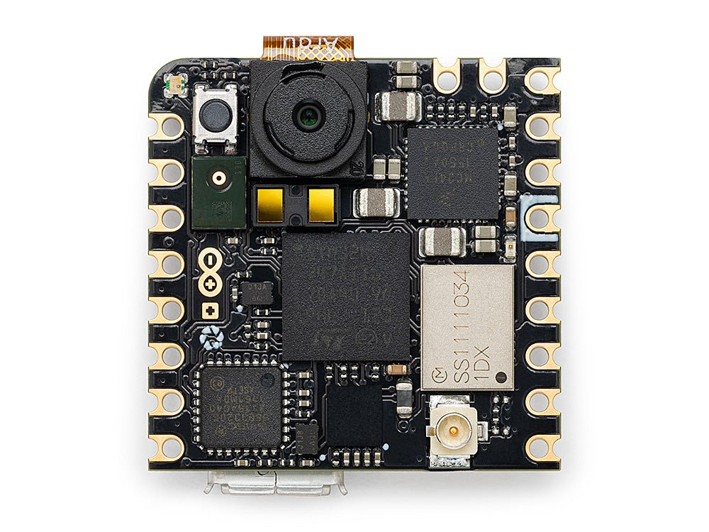
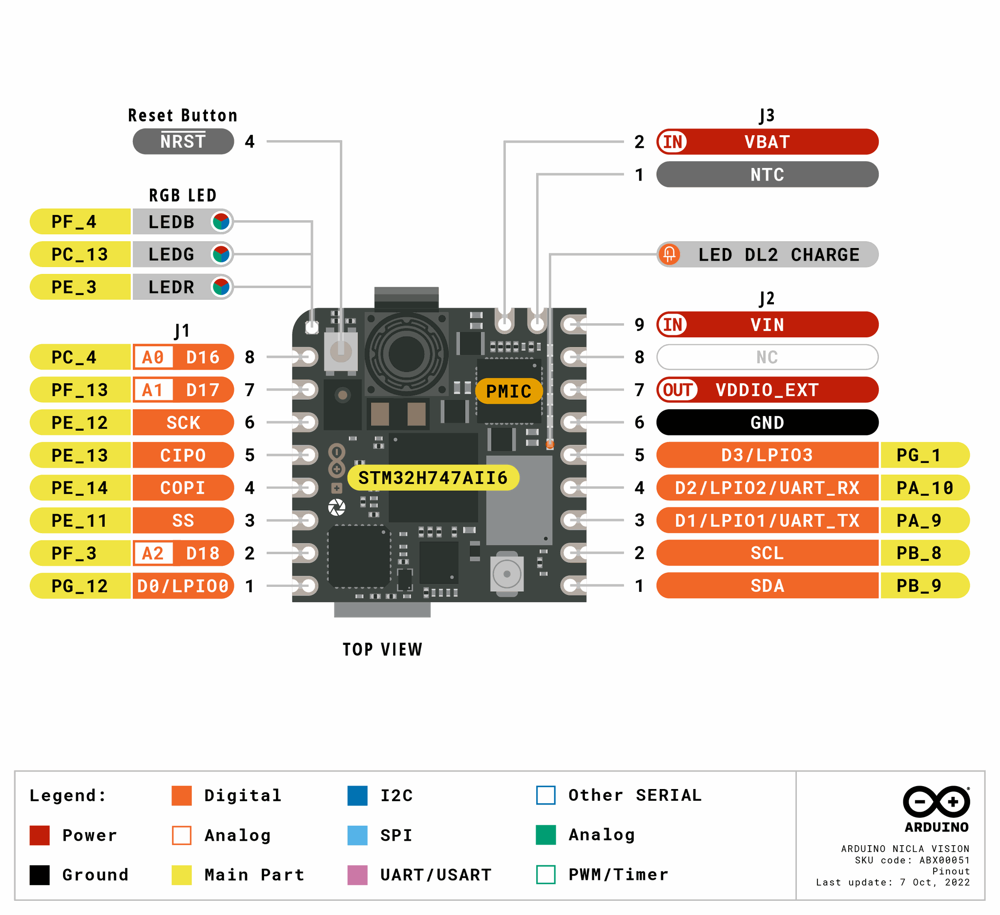

Arduino Nicla Vision¶
L’Arduino Nicla Vision est une carte de vision industrielle de 22,86 × 22,86 mm construite autour du STMicroelectronics STM32H747AII6 — un SoC double cœur combinant un Cortex‑M7 à 400 MHz avec un Cortex‑M4 à 200 MHz. Le micrologiciel OpenMV s’exécute entièrement sur le cœur M7. La carte associe le MCU au capteur CMOS couleur GC2145 de 2 Mpx, à une centrale inertielle (IMU) 6 axes LSM6DSOX, à un microphone MEMS MP34DT06, à un télémètre temps de vol VL53L1CB, au Wi‑Fi + Bluetooth LE 5.1 et à un chargeur de batterie / jauge de carburant.
{kind=link}

Pour la fiche technique complète, les photos et les dimensions, consultez la page produit Arduino Nicla Vision.
Points forts¶
STMicroelectronics STM32H747AII6 double Cortex‑M7 (400 MHz) + Cortex‑M4 (200 MHz). Le micrologiciel OpenMV s’exécute uniquement sur le cœur M7.
2 Mo de mémoire flash interne plus 16 Mo de mémoire flash QSPI externe (utilisée pour l’application + ROMFS).
1 Mo de SRAM interne.
Encodeur/décodeur JPEG matériel.
Capteur CMOS couleur GC2145 de 2 Mpx.
IMU embarquée (accéléromètre + gyroscope LSM6DSOX), microphone MEMS (MP34DT06JTR) et télémètre temps de vol VL53L1CB (jusqu’à ~4 m).
Wi‑Fi b/g/n (2,4 GHz) + Bluetooth LE 5.1 via le module Murata 1DX (CYW4343W) — se connecte à l’antenne fournie via un connecteur U.FL embarqué.
USB haute vitesse (480 Mb/s) via Micro USB à travers un PHY ULPI externe (USB3320C).
13 broches d’E/S utilisateur sur les connecteurs de bord Arduino — quatre LPIO numériques (
D0–D3), trois entrées analogiques 1,8 V (A0–A2), la paire I²CSCL/SDAet le quatuor SPISCLK/CIPO/COPI/CS.Prise en charge de batterie — connecteur Li‑Po à l’arrière, chargeur de type BQ et jauge de carburant MAX17262 sur le bus PMIC interne.
Connecteur ESLOV à 5 broches à l’arrière pour une extension I²C sans soudure.
Avertissement
Les broches numériques utilisateur sont à 3,3 V par défaut mais acheminées à travers des convertisseurs de niveau programmables par logiciel (VDDIO_EXT) qui peuvent être reconfigurés à 1,8 V. Les broches analogiques (A0–A2) sont uniquement à 1,8 V — elles contournent les convertisseurs de niveau et se connectent directement au MCU. Appliquer 3,3 V sur A0–A2 endommagera le SoC.
Brochage¶
{kind=link}

Référence des broches¶
Treize broches utilisateur sont exposées sur les connecteurs de bord Arduino (J1 et J2). Des signaux supplémentaires de débogage, de récupération et de PMIC sont acheminés vers des pastilles de test à l’arrière de la carte.
Nom de la broche |
Référence |
Fonction |
|---|---|---|
D0 |
3,3 V |
GPIO / LPIO0 (J1‑1) |
D1 |
3,3 V |
LPUART1 TX / TIM1 CH2 / LPIO1 (J2‑3) |
D2 |
3,3 V |
LPUART1 RX / TIM1 CH3 / LPIO2 (J2‑4) |
D3 |
3,3 V |
GPIO / LPIO3 (J2‑5) |
A0 |
1,8 V |
ADC1 canal 4 (J1‑8) |
A1 |
1,8 V |
ADC2 canal 2 (J1‑7) |
A2 |
1,8 V |
ADC3 canal 5 (J1‑2) |
SCL |
3,3 V |
I2C1 SCL / UART4 RX / TIM4 CH3 (J2‑2) |
SDA |
3,3 V |
I2C1 SDA / UART4 TX / TIM4 CH4 (J2‑1) |
SCLK |
3,3 V |
SPI4 SCK / TIM1 CH3N (J1‑6) |
CIPO |
3,3 V |
SPI4 MISO / TIM1 CH3 (J1‑5) |
COPI |
3,3 V |
SPI4 MOSI / TIM1 CH4 (J1‑4) |
CS |
3,3 V |
SPI4 NSS / TIM1 CH2 (J1‑3) |
RESET |
3,3 V |
tirer vers GND (ou appuyer sur le bouton embarqué) pour réinitialiser la carte |
LED_RED |
3,3 V |
canal rouge de la LED RGB (actif à l’état bas) |
LED_GREEN |
3,3 V |
canal vert de la LED RGB (actif à l’état bas) |
LED_BLUE |
3,3 V |
canal bleu de la LED RGB (actif à l’état bas) |
Note
D0–D3 et SCLK/CIPO/COPI/CS se trouvent derrière le convertisseur de niveau bidirectionnel TXB0108 — ce composant ne prend en charge que la commande GPIO en push‑pull, donc le trafic de bus en collecteur ouvert (par exemple un 1‑Wire ou un I²C émulé en bit‑bang sur ces broches) ne fonctionnera pas.
SCL/SDA se trouvent derrière un convertisseur NTS0304 distinct qui prend en charge à la fois la commande en push‑pull et en collecteur ouvert, ce qui explique pourquoi I²C 1 y fonctionne.
Les deux convertisseurs sont référencés sur VDDIO_EXT (3,3 V par défaut depuis le PMIC embarqué), et leur puissance de commande est limitée par rapport à une GPIO directe — ils sont conçus pour des charges au niveau du signal plutôt que pour des charges de puissance.
Broches d’alimentation¶
Broches des connecteurs de bord :
VIN (J2‑9) — rail système principal 3,6 – 5 V. Le PMIC prend son entrée ici.
VDDIO_EXT (J2‑7) — sortie du rail du convertisseur de niveau, 1,8 V ou 3,3 V (3,3 V par défaut). Utilisez-la pour alimenter des périphériques externes 1,8 V ou 3,3 V rattachés aux broches LPIO/SPI/I²C afin qu’ils parlent le même niveau logique que les connecteurs.
VBAT (J3‑2) — entrée de batterie Li‑Po. Le PMIC embarqué charge la cellule depuis VIN et rapporte l’état de charge via la jauge de carburant.
NTC (J3‑1) — entrée optionnelle de thermistance Li‑Po.
GND (J2‑6) — masse commune.
NC (J2‑8) — non connecté.
Pastilles de test à l’arrière de la carte :
+3V3 — rail principal 3,3 V.
D_P / D_N — paire de données USB haute vitesse (post‑PHY).
L’USB et le connecteur ESLOV alimentent tous deux VIN à travers une paire de diodes idéales LM66100 (une par source), de sorte que chaque alimentation peut alimenter la carte à elle seule et que les deux ne se rétroalimentent jamais. Si vous pilotez VIN de manière externe sur J2‑9, cela a la priorité — les diodes cessent simplement de conduire depuis l’USB / ESLOV dès que le rail externe monte plus haut.
La carte peut donc être alimentée par l’un de ces chemins :
Micro USB — 5 V vers VIN à travers la diode idéale côté USB.
Connecteur ESLOV — jusqu’à 5 V sur la broche
VESLOVde J5, acheminés vers VIN à travers la diode idéale côté ESLOV (voir Connecteur ESLOV).Broche VIN (J2‑9) — appliquer directement une alimentation régulée de 3,6 – 5 V.
Batterie Li‑Po — connectez-la au connecteur de batterie J4 à l’arrière ou aux pastilles VBAT/GND/NTC sur J3 / J2‑6. Ne connectez pas deux batteries simultanément.
Connecteur ESLOV¶
J5 à l’arrière de la carte est un connecteur ESLOV Molex à 5 broches sans soudure :
Broche |
Nom |
Fonction |
|---|---|---|
J5‑1 |
VESLOV |
entrée d’alimentation (≤ 5 V) — combinée par OU dans |
J5‑2 |
INT |
entrée d’interruption externe sur |
J5‑3 |
SCL_EXT |
partagée avec la pastille |
J5‑4 |
SDA_EXT |
partagée avec la pastille |
J5‑5 |
GND |
masse commune |
Les SCL_EXT/SDA_EXT de l’ESLOV et les SCL/SDA de J2 sont les mêmes broches — un seul bus I²C 1 exposé sur deux connecteurs.
Astuce
Utilisez l”estimateur d’autonomie de la batterie pour modéliser la durée pendant laquelle la Nicla Vision fonctionnera sur batterie pour un cycle de service actif / veille profonde donné.
Broches de récupération et de débogage¶
RESET — à la fois un bouton momentané sur le dessus de la carte et une pastille (J3‑4 / pastille de test P5) reliée à la ligne NRST du SoC. Tirer vers GND pour réinitialiser.
La Nicla Vision utilise la réinitialisation par double appui standard d’Arduino pour entrer dans le programme d’amorçage d’Arduino — appuyez rapidement deux fois sur le bouton de réinitialisation et la carte s’énumère en tant que périphérique DFU. OpenMV IDE utilise ce mode pour reflasher le micrologiciel.
Les signaux SWD du STM32 sont exposés à l’arrière de la carte à travers une rangée de pastilles de test entre les deux connecteurs J2. Soudez-y un connecteur 2,54 mm (100 mils) pour rattacher un adaptateur ST‑LINK ou J‑Link :
P1 / P2 — bus I²C PMIC interne sur PF0 (SDA) et PF1 (SCL). Il s’agit de
machine.I2C(2)sur la Nicla Vision et il transporte le trafic du PMIC, de la jauge de carburant et du ToF.P3 — TMS / SWDIO (PA13)
P4 — TCK / SWCLK (PA14)
P5 — NRST
P6 — TDO / SWO (PB3)
P7 — rail +1V8 (l’alimentation d’E/S du SoC — aussi la bonne référence pour l’adaptateur de débogage).
P8 —
VOTP_PMIC— programmation en usine uniquement. Doit être laissé non connecté.
Tous les signaux de débogage sont référencés à 1,8 V — l’anneau d’E/S du STM32H747 sur cette carte fonctionne à partir du rail +1V8. Réglez votre adaptateur de débogage sur une logique à 1,8 V avant de le connecter.
Périphériques embarqués¶
LED¶
La Nicla Vision dispose d’une seule LED RGB utilisateur, contrôlable par logiciel via machine.LED
from machine import LED
LED("LED_RED").on()
LED("LED_GREEN").on()
LED("LED_BLUE").on()
Une LED DL2 CHARGE distincte sur le côté de la carte est câblée directement sur la sortie CHGB du PMIC — elle s’allume pendant qu’une batterie Li‑Po est chargée depuis USB / ESLOV / VIN et n’est pas contrôlable par l’utilisateur.
Capteur de caméra¶
Le GC2145 est piloté via le module csi — capteurs de caméra
import csi
cam = csi.CSI()
cam.reset()
cam.pixformat(csi.RGB565)
cam.framesize(csi.QVGA)
cam.snapshot(time=2000) # let auto‑exposure settle
while True:
img = cam.snapshot()
Lorsque vous demandez une petite taille de trame, le pilote du GC2145 recadre une fenêtre de lecture proportionnellement petite depuis le capteur — par défaut, le rapport de sous-échantillonnage de la lecture à la sortie est plafonné à 3x pour maintenir une cadence d’images élevée. csi.IOCTL_SET_FOV_WIDE augmente ce plafond à 5x, ce qui signifie que le pilote puise dans une zone plus large du capteur lors de la diffusion de petites résolutions. Le résultat est un champ de vision nettement plus large aux petites tailles de trame, au prix d’un certain débit
cam.ioctl(csi.IOCTL_SET_FOV_WIDE, True)
cam.ioctl(csi.IOCTL_GET_FOV_WIDE) # returns the current setting
Cœur M4¶
Le cœur Cortex‑M4 est exposé via openamp pour la communication entre processeurs. Le micrologiciel OpenMV s’exécute uniquement sur le M7 ; le M4 n’a pas de runtime MicroPython propre, donc l’utiliser signifie compiler une image de micrologiciel C distincte et la charger depuis le système de fichiers via openamp.RemoteProc. Un micrologiciel d’exemple précompilé qui implémente un point de terminaison UART virtuel est disponible dans le dépôt openamp_vuart — suivez son README pour compiler vuart.elf
import openamp
import time
def ept_recv_callback(src_addr, data):
print("Received:", data.decode())
ept = openamp.Endpoint("vuart-channel", callback=ept_recv_callback)
rproc = openamp.RemoteProc("vuart.elf")
rproc.start()
count = 0
while True:
if ept.is_ready():
ept.send("Hello World %d!" % count, timeout=1000)
count += 1
time.sleep_ms(1000)
En pratique, cette prise en charge est mieux considérée comme une démonstration de l’interface openamp plutôt que comme une plateforme double cœur fonctionnelle — le M4 ne peut pas être réinitialisé indépendamment du M7, donc arrêter le M4 force un redémarrage complet du système.
Microphone¶
Le microphone PDM MP34DT06JTR embarqué est capturé via audio — Module Audio sur le périphérique DFSDM du STM32. Chaque tampon arrive sous la forme d’un bytearray PCM signé 16 bits, prêt à être fourni à ulab/numpy pour le DSP — par exemple, un simple détecteur de volume sonore
import audio
from ulab import numpy as np
def loudness(pcmbuf):
samples = np.array(np.frombuffer(pcmbuf, dtype=np.int16), dtype=np.float)
rms = np.sqrt(np.mean(samples ** 2))
if rms > 10000:
print("Loud!", int(rms))
audio.init(channels=1, frequency=16000, gain_db=24)
audio.start_streaming(loudness)
while True:
pass
IMU¶
L’accéléromètre + gyroscope LSM6DSOX embarqué est exposé via imu — capteur imu
import imu
import time
while True:
print(imu.acceleration_mg()) # (x, y, z) in milli‑g
print(imu.angular_rate_mdps()) # (x, y, z) in milli‑deg/s
time.sleep_ms(100)
L’IMU est câblée sur un bus SPI interne dédié (SPI5) afin qu’elle ne soit pas en conflit avec le SPI4 utilisateur exposé sur les connecteurs.
Télémètre temps de vol¶
Le télémètre temps de vol ST VL53L1CB embarqué se trouve sur le bus I²C PMIC interne (I²C 2). Utilisez le pilote figé vl53l1x — Pilote du capteur de distance ToF VL53L1X pour obtenir des mesures de distance jusqu’à ~4 m
import time
from machine import I2C
import vl53l1x
bus = I2C(2) # internal bus (PMIC / fuel gauge / ToF)
tof = vl53l1x.VL53L1X(bus)
while True:
print("Distance:", tof.read(), "mm")
time.sleep_ms(100)
Jauge de carburant de la batterie¶
La jauge de carburant ModelGauge m5 Maxim MAX17262 suit la tension, le courant, la température et l’état de charge de la batterie Li‑Po. Elle se trouve sur I²C 2 à l’adresse 0x36.
Le MAX17262 dispose d’une mesure de courant interne, de sorte que le registre de courant se lit directement en microampères sans facteur Rsense externe à appliquer. La lecture de la jauge de carburant est sans danger — aucun pilote n’est livré, mais les registres documentés dans la fiche technique du MAX17262 peuvent être lus directement
import time
import struct
from machine import I2C
FUEL_GAUGE = 0x36 # MAX17262
def read_reg(bus, addr, reg):
return struct.unpack("<H", bus.readfrom_mem(addr, reg, 2))[0]
def read_signed(bus, addr, reg):
v = read_reg(bus, addr, reg)
return v - 0x10000 if v & 0x8000 else v
bus = I2C(2)
while True:
# 0x05 RepCap — remaining capacity, raw × 0.5 mAh
rep_cap = read_reg(bus, FUEL_GAUGE, 0x05) * 0.5
# 0x06 RepSOC — state of charge, raw / 256 %
soc = read_reg(bus, FUEL_GAUGE, 0x06) / 256
# 0x08 Temp — die temperature, signed, raw / 256 °C
temp = read_signed(bus, FUEL_GAUGE, 0x08) / 256
# 0x09 VCell — battery voltage, raw × 78.125 µV
vcell = read_reg(bus, FUEL_GAUGE, 0x09) * 78.125 / 1_000_000
# 0x0A Current — signed, raw × 156.25 µA
current = read_signed(bus, FUEL_GAUGE, 0x0A) * 156.25 / 1000
# 0x0B AvgCurrent — averaged current
avg_curr = read_signed(bus, FUEL_GAUGE, 0x0B) * 156.25 / 1000
# 0x10 FullCapRep — learned full capacity, raw × 0.5 mAh
full_cap = read_reg(bus, FUEL_GAUGE, 0x10) * 0.5
# 0x11 TTE — time-to-empty (valid while discharging), raw × 5.625 s
tte_s = read_reg(bus, FUEL_GAUGE, 0x11) * 5.625
# 0x20 TTF — time-to-full (valid while charging), raw × 5.625 s
ttf_s = read_reg(bus, FUEL_GAUGE, 0x20) * 5.625
# 0x17 Cycles — charge-cycle counter, 1% per LSB
cycles = read_reg(bus, FUEL_GAUGE, 0x17) / 100
print("V: %.3f V" % vcell)
print("Capacity: %.1f / %.1f mAh (%.1f %%)" % (rep_cap, full_cap, soc))
print("Temp: %.1f C" % temp)
print("Current: %.1f mA (avg %.1f mA)" % (current, avg_curr))
print("TTE: %.0f s TTF: %.0f s" % (tte_s, ttf_s))
print("Cycles: %.2f" % cycles)
print()
time.sleep_ms(1000)
Current est en complément à deux signé : positif pendant la charge, négatif pendant la décharge. TTE n’est significatif que lorsque le courant est négatif ; TTF uniquement lorsque le courant est positif.
Circuit de gestion de l’alimentation¶
Le PMIC NXP MC34PF1550A0EP gère chaque régulateur de la Nicla Vision — le rail principal +3V3, le rail cœur / E/S +1V8 du SoC, VDDIO_EXT vers les convertisseurs de niveau et le chargeur Li‑Po. Il se trouve sur I²C 2 à l’adresse 0x08.
Avertissement
Lire les registres du PMIC est sans danger ; y écrire est dangereux. Une mauvaise configuration d’un régulateur abaisseur ou d’un paramètre de chargeur peut endommager définitivement la carte, la batterie, ou les deux. Traitez le PMIC comme étant en lecture seule à moins de savoir exactement ce que vous faites.
La chose la plus utile que le PMIC vous indique et que la jauge de carburant ne peut pas indiquer est la machine à états du chargeur — si la carte fonctionne actuellement sur USB / ESLOV / VIN, à quelle étape du cycle de charge se trouve la Li‑Po et si le chargeur est en défaut thermique ou de chien de garde. Les registres du chargeur se trouvent à un décalage de 0x80 dans l’espace d’adressage I²C principal du PF1550 (voir §22.2 de la fiche technique du PF1550), donc par exemple CHG_INT_OK à l’adresse de chargeur 0x04 est lu depuis le registre PMIC 0x84
import time
from machine import I2C
PMIC = 0x08
# Charger state machine (low nibble of CHG_SNS, register 0x87)
CHG_STATES = {
0x0: "precharge",
0x1: "fast charge (constant current)",
0x2: "fast charge (constant voltage)",
0x3: "end of charge",
0x4: "done",
0x6: "timer fault",
0x7: "thermistor suspend",
0x8: "off — input invalid or charger disabled",
0x9: "battery overvoltage",
0xA: "thermal shutdown",
0xC: "linear mode (not charging)",
}
bus = I2C(2)
while True:
# 0x84 CHG_INT_OK — single-bit indicators
ok = bus.readfrom_mem(PMIC, 0x84, 1)[0]
vbus_ok = bool(ok & (1 << 5)) # bit 5 — VBUS valid (USB/ESLOV/VIN)
bat_ok = bool(ok & (1 << 2)) # bit 2 — battery OK
chg_ok = bool(ok & (1 << 3)) # bit 3 — charger actively charging
thm_ok = bool(ok & (1 << 7)) # bit 7 — thermistor in normal range
# 0x87 CHG_SNS — charger state + thermal regulation flag
chg_sns = bus.readfrom_mem(PMIC, 0x87, 1)[0]
state = CHG_STATES.get(chg_sns & 0x0F, "reserved")
treg = bool(chg_sns & (1 << 7)) # thermal regulation active
print("VBUS valid: ", vbus_ok)
print("battery OK: ", bat_ok)
print("charger active: ", chg_ok)
print("thermistor normal: ", thm_ok)
print("thermal reg active: ", treg)
print("state: ", state)
print()
time.sleep_ms(1000)
D’autres registres en lecture seule à examiner dans la fiche technique (tous au décalage de chargeur 0x80) : 0x80 CHG_INT (interruptions de chargeur verrouillées — drapeaux de défaut), 0x86 VBUS_SNS (l’état multibits du VBUS y compris OVLO / UVLO / DPM) et 0x88 BATT_SNS (présence de la batterie et état de surintensité).
Wi‑Fi¶
Le Murata 1DX (CYW4343W) embarqué est exposé via network — configuration réseau en tant qu’interface station. Connectez l’antenne fournie au connecteur U.FL embarqué avant d’activer la radio
import network, time
wlan = network.WLAN(network.STA_IF)
wlan.active(True)
wlan.connect("ssid", "password")
while not wlan.isconnected():
time.sleep(1)
print("Wi‑Fi IP:", wlan.ipconfig("addr4")[0])
Bluetooth¶
Le même Murata 1DX expose également le Bluetooth LE 5.1. Utilisez aioble — BLE asynchrone pour un BLE compatible asyncio — par exemple, diffuser en tant que périphérique et attendre qu’un central se connecte
import asyncio
import aioble
async def run():
while True:
conn = await aioble.advertise(250_000, name="Nicla-Vision")
print("Connected:", conn.device)
await conn.disconnected()
asyncio.run(run())
Référence des bus¶
GPIO¶
Utilisez machine.Pin pour lire ou piloter n’importe laquelle des broches sérigraphiées. Les sorties sont en CMOS 3,3 V (par défaut VDDIO_EXT) et les convertisseurs de niveau limitent la puissance de commande par broche à quelques milliampères — ils sont conçus pour des charges au niveau du signal plutôt que pour des charges de puissance.
from machine import Pin
out = Pin("D0", Pin.OUT)
out.on()
out.off()
out.value(1)
inp = Pin("D1", Pin.IN, Pin.PULL_UP)
print(inp.value())
Toute broche d’entrée peut également déclencher une interruption lors des transitions de front
def handler(pin):
print("triggered:", pin)
Pin("D1", Pin.IN, Pin.PULL_UP).irq(
handler, Pin.IRQ_FALLING | Pin.IRQ_RISING,
)
UART¶
Bus |
TX |
RX |
|---|---|---|
UART4 |
SDA |
SCL |
from machine import UART
uart = UART(4, baudrate=115200)
uart.write("hello")
uart.read(5)
Note
UART4 partage ses broches avec I²C 1 — les mêmes pastilles SDA/SCL transportent les deux bus. Choisissez UART ou I²C, mais pas les deux, sur ces broches.
La sérigraphie D1/D2 indique aussi UART_TX/UART_RX, mais sur ce micrologiciel ces broches sont acheminées vers LPUART1, et non vers machine.UART. machine.UART(1) lui-même est réservé au contrôleur Bluetooth intégré et n’est pas accessible sur les connecteurs.
I²C¶
Bus |
SCL |
SDA |
|---|---|---|
I2C1 |
SCL |
SDA |
from machine import I2C
i2c = I2C(1, freq=400_000)
i2c.scan()
i2c.writeto(0x76, b"hi")
Les pastilles SCL/SDA sur J2 et les broches SCL_EXT/SDA_EXT du connecteur ESLOV aboutissent sur le même bus I²C 1 — voir Connecteur ESLOV ci-dessus pour le brochage ESLOV.
Le même matériel peut aussi être utilisé en mode cible (esclave) via machine.I2CTarget pour exposer une région mémoire à un autre contrôleur I²C
from machine import I2CTarget
buf = bytearray(32)
target = I2CTarget(1, addr=0x42, mem=buf)
SPI¶
Bus |
MOSI |
MISO |
SCK |
CS |
|---|---|---|---|---|
SPI4 |
COPI |
CIPO |
SCLK |
CS |
from machine import SPI
from machine import Pin
spi = SPI(4, baudrate=10_000_000)
cs = Pin("CS", Pin.OUT, value=1) # CS is not driven by the SPI peripheral
cs.value(0)
spi.write(b"hello")
cs.value(1)
ADC¶
La Nicla Vision expose trois canaux ADC 12 bits sur A0, A1 et A2. Tous les trois sont référencés à 1,8 V — read_u16 renvoie 0–65535 sur la plage 0–1,8 V à la broche
from machine import ADC
import time
adc = ADC("A0")
while True:
voltage = adc.read_u16() * 1.8 / 65535
print(voltage)
time.sleep_ms(100)
Avertissement
Les entrées ADC de la Nicla Vision sont référencées à 1,8 V (et n’ont pas de convertisseur de niveau devant le SoC). Appliquer un signal de 3,3 V saturera le convertisseur et risque d’endommager la broche — divisez les tensions plus élevées de manière externe.
PWM¶
Broche |
Minuteur / canal |
|---|---|
D1 |
TIM1 CH2 |
D2 |
TIM1 CH3 |
SCL |
TIM4 CH3, TIM16 CH1 |
SDA |
TIM4 CH4, TIM17 CH1 |
SCLK |
TIM1 CH3N |
CIPO |
TIM1 CH3 |
COPI |
TIM1 CH4 |
CS |
TIM1 CH2 |
Pilotez l’un d’entre eux via machine.PWM
from machine import Pin, PWM
pwm = PWM(Pin("D1"), freq=1_000, duty_u16=32768)
Note
Plusieurs broches partagent des canaux TIM1 :
TIM1 CH2 est sur
D1etCS.TIM1 CH3 est sur
D2etCIPO;SCLKproduit le complément inversé (TIM1 CH3N) du même canal.TIM1 CH4 est sur
COPIuniquement.
Choisissez un seul consommateur par canal de minuteur. Les broches du quatuor SPI (SCLK/CIPO/COPI/CS) ne peuvent pas non plus être pilotées en PWM tant que machine.SPI(4) les utilise.
Bus émulés en bit‑bang logiciel¶
machine.SoftI2C et machine.SoftSPI fonctionnent sur n’importe quelle GPIO si vous avez besoin d’un bus supplémentaire.
Capteur thermique (externe)¶
Le micrologiciel inclut le pilote fir — pilote de capteur thermique (fir == infrarouge lointain) pour les imageurs thermiques câblés en externe :
MLX90621 — réseau IR 16 × 4
MLX90640 — réseau IR 32 × 24
MLX90641 — réseau IR 16 × 12
AMG8833 — réseau IR 8 × 8
Câblez le module sur le bus I²C de la carte et lisez les trames avec fir.init() + fir.snapshot()
import time
import image
import fir
fir.init() # auto‑detects the sensor
clock = time.clock()
while True:
clock.tick()
try:
img = fir.snapshot(x_scale=5, y_scale=5,
color_palette=image.PALETTE_IRONBOW,
hint=image.BICUBIC,
copy_to_fb=True)
except OSError:
continue
print(clock.fps())
Le pilote fir ne communique avec le capteur que sur I²C 1 — câblez le module sur les pastilles sérigraphiées SCL / SDA.
Temporisation¶
time¶
Le module time couvre les délais bloquants, les tics monotones et la mesure du temps écoulé
import time
time.sleep(1) # seconds
time.sleep_ms(500)
time.sleep_us(10)
start = time.ticks_ms()
# ...do work...
elapsed = time.ticks_diff(time.ticks_ms(), start)
Minuteurs virtuels¶
machine.Timer planifie des fonctions de rappel périodiques ou ponctuelles sans consommer d’emplacement de minuteur matériel. Passez -1 comme identifiant pour utiliser un minuteur virtuel (logiciel)
from machine import Timer
one_shot = Timer(-1)
one_shot.init(period=5_000, mode=Timer.ONE_SHOT,
callback=lambda t: print("once"))
periodic = Timer(-1)
periodic.init(period=2_000, mode=Timer.PERIODIC,
callback=lambda t: print("tick"))
Les valeurs de période sont en millisecondes. Appelez deinit() pour arrêter et libérer l’emplacement.
Horloge temps réel¶
machine.RTC conserve l’heure murale à travers les réinitialisations
from machine import RTC
rtc = RTC()
rtc.datetime((2026, 4, 30, 4, 12, 0, 0, 0)) # Y, M, D, weekday, h, m, s, subsec
print(rtc.datetime())
Chien de garde¶
machine.WDT réinitialise la carte si l’application se bloque. Une fois démarré, il ne peut être ni arrêté ni reconfiguré — alimentez-le périodiquement à l’intérieur de votre boucle principale
from machine import WDT
wdt = WDT(timeout=5_000) # 5 second window
while True:
# ...do work...
wdt.feed()
Informations de démarrage et d’exécution¶
Mise à jour du micrologiciel (DFU)¶
La Nicla Vision utilise la réinitialisation par double appui standard d’Arduino pour entrer dans le programme d’amorçage d’Arduino. Appuyez rapidement deux fois sur le bouton de réinitialisation — la carte se réénumère via USB en tant que périphérique DFU et OpenMV IDE peut flasher une nouvelle image de micrologiciel.
Un script en cours d’exécution peut réentrer dans le programme d’amorçage à la demande en appelant machine.bootloader()
import machine
machine.bootloader()
Système de fichiers et ordre de démarrage¶
Le micrologiciel de la Nicla Vision monte jusqu’à deux systèmes de fichiers au démarrage :
Mémoire flash interne — toujours montée sur
/flash. Contientmain.pyetREADME.txtpar défaut ; créée au tout premier démarrage.ROMFS — système de fichiers en lecture seule, mappé en mémoire sur
/rom, monté automatiquement par MicroPython au démarrage.
Après le montage, le répertoire de travail est défini sur /flash. L’interpréteur exécute ensuite les scripts depuis ce répertoire :
boot.pyest exécuté à chaque réinitialisation logicielle (démarrage à froid,Ctrl‑Ddepuis le REPL, ou chaque fois que le script en cours d’exécution se termine).main.pyest exécuté uniquement au démarrage à froid, immédiatement aprèsboot.py. Les réinitialisations logicielles ultérieures réexécutentboot.pymais passent directement au REPL — pour réexécutermain.py, vous devez réinitialiser entièrement la carte.
Le main.py par défaut livré sur une carte fraîchement flashée fait simplement clignoter le canal bleu de la LED RGB utilisateur comme un battement de cœur (deux impulsions courtes, court intervalle), afin que vous puissiez savoir que le micrologiciel a démarré proprement sans aucun hôte rattaché.
sys.path est étendu pour inclure les deux systèmes de fichiers et leurs sous-répertoires lib/, de sorte que les modules importables peuvent résider dans /flash/lib ou /rom/lib.
Lorsqu’elle est connectée via USB, /flash s’énumère aussi comme un lecteur de stockage de masse USB sur l’hôte, vous permettant de modifier directement boot.py, main.py et tout autre fichier. Éjectez le lecteur avant de réinitialiser la caméra afin que l’hôte vide ses écritures en cache.
Note
Comme le système d’exploitation traite le lecteur comme un périphérique de bloc passif, les fichiers créés ou modifiés par le code s’exécutant sur la caméra n’apparaîtront pas tant que l’hôte n’aura pas remonté le lecteur. Si à la fois le système d’exploitation et la caméra écrivent sur le même système de fichiers en même temps, le système d’exploitation l’emportera et écrasera les modifications faites par la caméra. Utilisez la carte SD pour toute donnée que le script réécrit, et remontez avant de lire ces fichiers depuis l’hôte.
Note
Le canal rouge de la LED RGB utilisateur peut s’allumer brièvement pendant que l’hôte lit ou écrit sur le lecteur de stockage de masse USB — il s’agit d’un indicateur d’activité piloté par le micrologiciel, et non d’un défaut.
Tailles de stockage¶
La Nicla Vision est livrée avec :
/flash— système de fichiers FAT de 11 Mo, en lecture/écriture./rom— ROMFS de 4 Mo en lecture seule, mappé en mémoire, utilisé pour livrer des scripts et des modèles ML qui bénéficient d’un accès mmap sans copie.
Indicateur de défaut grave (hard fault)¶
Si la LED RGB utilisateur défile rapidement à travers toutes les couleurs — assez vite pour ressembler à une LED blanche scintillante plutôt qu’à des teintes distinctes — le micrologiciel a rencontré un défaut grave irrécupérable. Reflashez le micrologiciel pour récupérer ; si le reflashage n’aide pas, la carte peut être physiquement endommagée.
Bibliothèques logicielles¶
Consultez l”index de la bibliothèque pour la liste complète des modules — y compris ceux qui sont propres à la version Nicla Vision.